THUẦN CHAY · VEGAN
越南文 · TIẾNG VIỆT
查看英文與中文對照
ENGLISH
繁體中文
DA NANG / HOI AN • OCT 2026
把行程放在口袋裡，找到身邊的植物好滋味。
YOUR LITTLE TRAVEL PLAN
沿著行程找風景，也把每一餐照顧好。
選一天，展開你的旅行。
依牌告時段推估，非即時營業；早餐／午餐／晚餐搜尋分別參考 08:30／12:00／18:00，不代表供應特定餐點。
PLANT-BASED STOPS
GOOD FOOD, CLOSE BY
先選附近，再挑一間喜歡的。
尚未取得定位，可使用地標。
依牌告時段推估，非即時營業。早餐／午餐／晚餐搜尋參考 08:30／12:00／18:00，不代表特定餐點。無座標店家另列，無法確認是否在範圍內。
Grab 查核 2026-10-17：官方入口、回報線索與舊資料分開標示；待確認不代表沒有 Grab。先在 Grab 設定收件地址，再核對分店及是否接單。卡片營業時間不代表外送時段，離線可讀查核記錄，開啟 Grab 需連線。
有 Grab 表示有官方分店入口；是否接單以 App 為準。
Google 未標歇業者排前，待確認店家排後；距離均為直線。評分為查核快照，轉載資料另有標示。出發前按「Google 商家／評價」查看最新評論與營業標示。
匯出全部店家，包含待確認與歇業記錄，不受篩選影響。匯入時定位只選 Location，標題選 Name。Google 依店名與地址定位，請核對圖釘位置。
歇業記錄可由「營業查核」選單查閱。
EXCHANGE FOREIGN CASH TO VND
依行程或定位，找銀行與授權櫃檯。
依行程路線估算距離；定位後可依你所在位置排序。
距離為 GPS 或當日行程地標的直線距離，不代表車程。沒有可靠座標的銀行仍提供地址導航，但不做最近排序。
台灣旅遊業者推薦：Vietcombank；本頁收錄峴港市中心分行。
購物順路：AEON・VietinBank 授權櫃檯。
帶台幣：先向 BIDV 分行確認現鈔受理。
推薦依據見各據點卡片；有官方幣別資料不代表分行當日一定收鈔。
幣別為官方資料，分行當日是否受理請先確認。
BANKS & AUTHORIZED COUNTERS
A KIND WAY TO ORDER
全素不含蛋、奶、蜂蜜、魚露與蠔油；蔥蒜可以。
越南文 · TIẾNG VIỆT
ENGLISH
繁體中文
點餐時也請確認湯底、沾醬與飲料成分。
A LITTLE PLANT-BASED PANTRY
找泡麵、零食與附近超市。
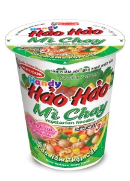
Handy Hảo Hảo Chay Lẩu Nấm Thập Cẩm
官方稱為 thuần chay（全素）；配方含麵粉、植物油、豆蛋白、蔬菜與菇粉。
找完整名稱中的 Chay＋Lẩu Nấm Thập Cẩm。同系列的蝦味、TomYum 等口味不可直接當全素。需要熱水，沖泡依杯身說明。
越南有此商品；峴港各店庫存未確認。
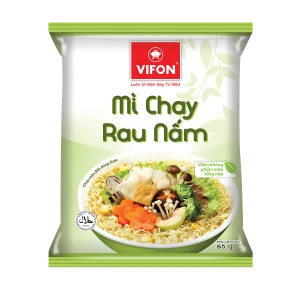
Mì Chay Rau Nấm VIFON
官方 2023 年成分文件未列肉、魚、蛋、奶或蜂蜜；含麵粉、棕櫚油、菇粉、酵母、乾燥蔬菜與調味添加物。
文件未交代所有添加物來源，尚不能宣稱經全素認證。配方可能更新，購買前核對實際包裝；需準備碗與熱水。
越南有素食泡麵販售資料；峴港各店庫存未確認。
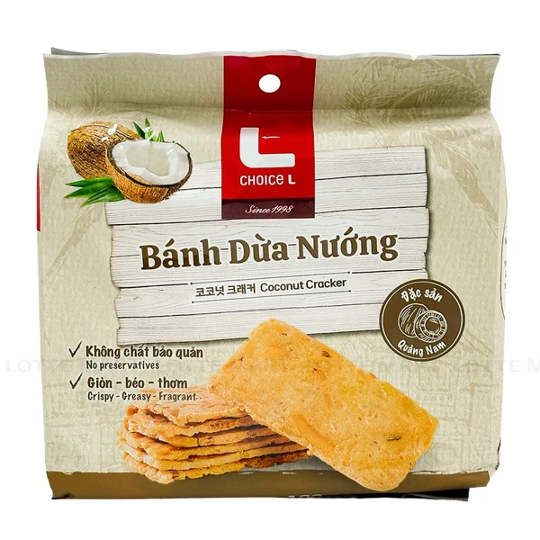
Bánh Dừa Nướng Choice L
LOTTE 公布成分：椰子 60%、糯米粉、糖、香草。未列動物成分。
可直接吃。核對 Choice L 與這款名稱，其他品牌或口味須另外看成分。此標示依公開配方判讀，非全素認證。
LOTTE 線上有此商品資料；峴港分店庫存未確認。
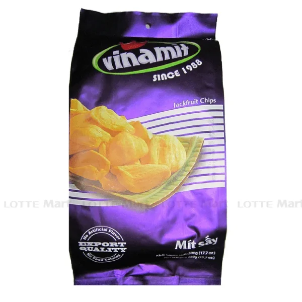
Mít Sấy Vinamit
品牌公布 210g 款成分：菠蘿蜜 98%＋植物油；LOTTE 的 500g 商品資料也列相同成分。
可直接吃。選原味，其他水果乾、混合款與調味版本分別看標籤；現場包裝重量可能不同。
LOTTE 線上有販售資料；峴港分店庫存未確認。
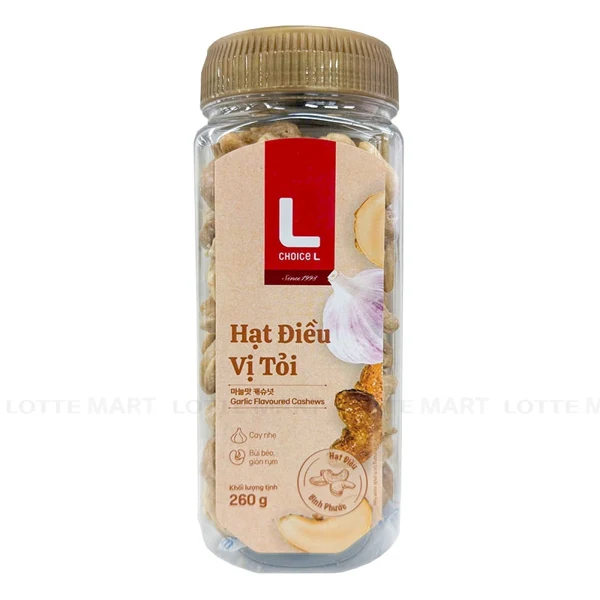
Hạt Điều Choice L Vị Tỏi
LOTTE 公布成分：腰果 98%、蒜、辣椒、鹽、糖各 0.5%。
可直接吃，含蒜與辣椒，符合接受五辛的飲食條件。其他口味不能沿用這款的成分判斷。
LOTTE 線上有此商品資料；峴港分店庫存未確認。
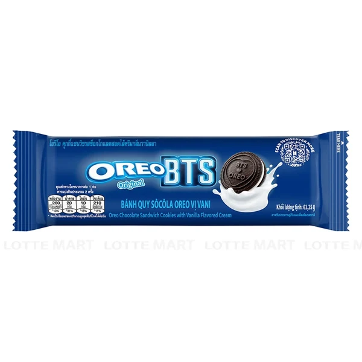
Oreo Nhân Kem Vani
查到的 LOTTE 商品成分未列蛋奶，乳化劑註明為大豆卵磷脂。
不同產地、口味與批次可能有不同配方；不能把所有 Oreo 當全素。核對實際奶成分與交叉接觸標示。網頁標題與網址的重量不同，請以手上包裝為準。
LOTTE 線上有此商品資料；峴港各店庫存未確認。
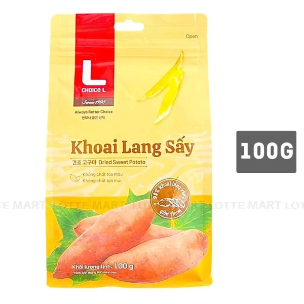
Khoai Lang Sấy Choice L
LOTTE 公布成分：地瓜 98%、植物油。 未列動物成分；此為成分判讀，非全素認證。
可直接吃；選原味地瓜款，其他加奶油、蜂蜜或魚露的調味款要另外確認。
LOTTE 線上有此商品資料；峴港分店販售與庫存未確認。
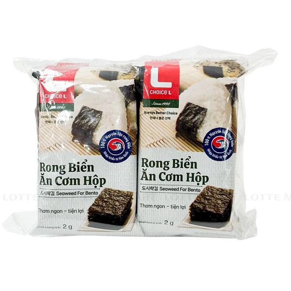
Rong Biển Sấy Dosirak Gim Choice L
LOTTE 公布成分：海苔、鹽、玉米油、芝麻油、糖。 未列動物成分；此為成分判讀，非全素認證。
可直接吃或配白飯；選這款原味，多包裝適合隨身帶。其他海苔可能含蝦、魚或動物調味料，不能沿用這款判斷。
LOTTE 線上有此商品資料；峴港分店販售與庫存未確認。
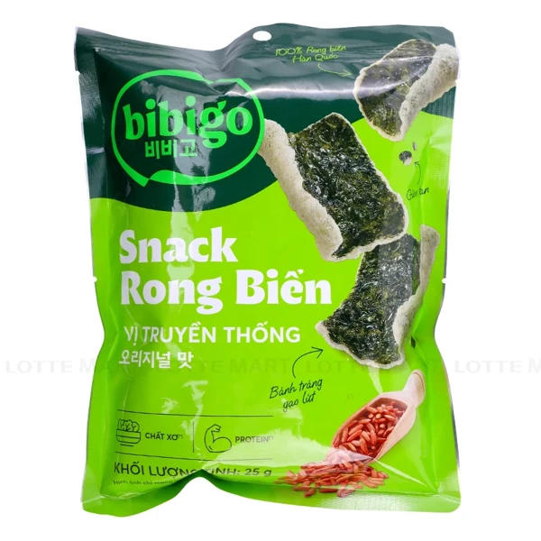
Bánh Snack Rong Biển bibigo Vị Truyền Thống
LOTTE 公布成分：米餅（樹薯澱粉、糙米粉、鹽）、葵花油、棕櫚油、海苔 6%、調味料（糖、鹽、海苔粉、酵母萃取物）。 未列動物成分；此為成分判讀，非全素認證。
可直接吃；找 Vị Truyền Thống（傳統口味），不要把品牌所有口味都當全素。以手上包裝的完整成分為準。
LOTTE 線上有此商品資料；峴港分店販售與庫存未確認。
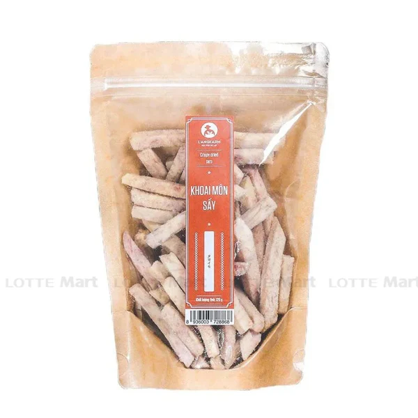
Khoai Môn Sấy L’angfarm
LOTTE 公布成分：芋頭 88%、糖 7%、植物油 4.5%、鹽 0.5%。 未列動物成分；此為成分判讀，非全素認證。
可直接吃；這款有加糖與油，選相同商品與規格，其他芋頭零食可能加奶粉。
LOTTE 線上有此商品資料；峴港分店販售與庫存未確認。
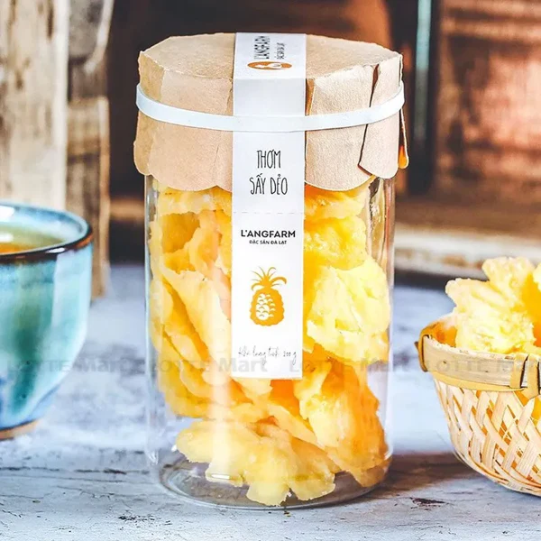
Mứt Thơm Sấy Dẻo L’angfarm
LOTTE 公布成分：鳳梨 80%、糖 16%、檸檬酸 E330、保鮮劑 E220。 未列動物成分；此為成分判讀，非全素認證。
可直接吃；含糖與 E220，購買時核對包裝警示。商品頁建議開封後密封，七天內食用。
LOTTE 線上有此商品資料；峴港分店販售與庫存未確認。
6 Nại Nam, Đà Nẵng
優先找 Choice L 椰子脆餅、蒜味腰果、Vinamit 菠蘿蜜乾與 Oreo 香草款；線上商品頁不代表本分店當日有貨。泡麵可出示越南文名稱詢問。
46 Điện Biên Phủ, Đà Nẵng
可安排超市採買；本次未確認上述商品在此分店的販售與庫存。
用官方門市搜尋找附近據點，再出示商品名稱詢問；本次未確認特定門市商品與庫存。
「chay」不一定是全素：查到的 Phúc An 素食餅商品頁仍列有蛋，不能只看商品名稱。